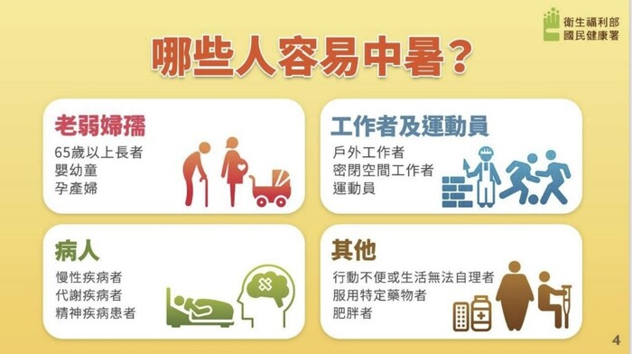
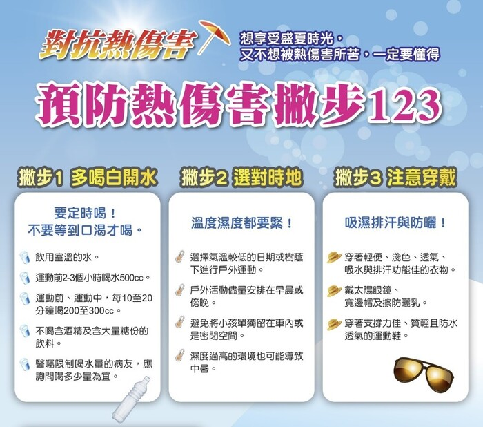
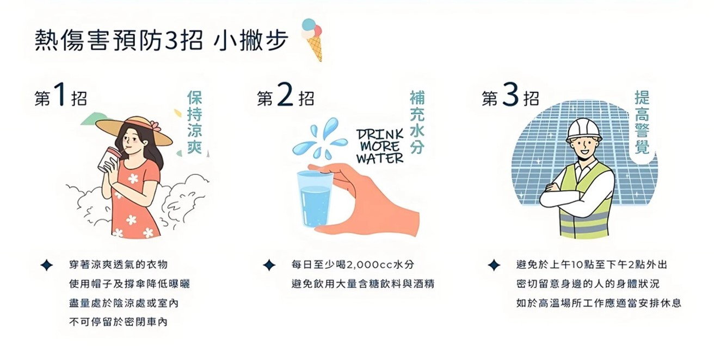
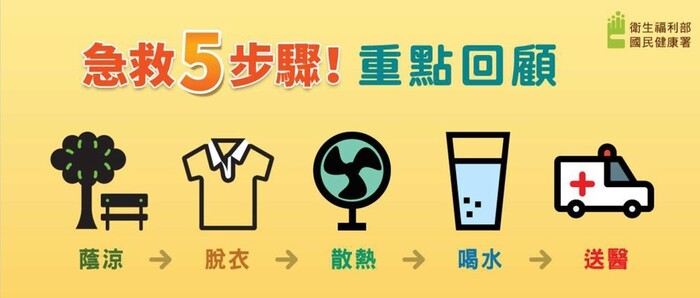

月號－健康大小事
月號－健康大小事隨著全球氣候變遷，極端高溫的天氣已經成為我們日常生活中不可忽視的挑戰。炎熱的夏季讓許多人面臨熱傷害的風險，戶外工作者、長者、兒童及慢性病患者更是高風險族群。學會預防與辨識熱傷害，有助於降低風險，讓大家在炎炎夏日中平安度過。 |
| 什麼是「熱傷害」？ |
熱傷害（Heat Injury）泛指人體在高溫環境下無法有效散熱，導致體溫異常升高，進而產生的一系列身體不適甚至致命狀況。最常見的熱傷害包括熱痙攣、熱昏厥、熱衰竭和中暑，其中以中暑為最需要小心的症狀。 |
| 熱傷害的4大徵兆，務必提高警覺！ |
|
在高溫環境下，如果出現以下症狀，務必要馬上停下活動，並儘速移至陰涼處及就醫： |
|
1.熱暈厥 ･ 常見症狀：頭暈、乏力、視線模糊 ･ 原因：因長時間站立或劇烈活動，導致血壓下降，大腦供血不足。容易發生於大量流汗後未適當補充水分時，尤其在戶外曝曬或悶熱環境中。 |
|
2.熱痙攣 ･ 常見症狀：肌肉抽搐、收縮疼痛，尤其發生在手臂、小腿或腹部。 ･ 原因：大量出汗導致電解質流失，肌肉產生痙攣反應。好發於大量出汗後未補充足夠電解質者，如運動員或戶外工作者。 |
|
3.熱衰竭 ･ 常見症狀：重度疲倦、頭痛、噁心、嘔吐、體溫升高，但意識清楚 ･ 若未及時處理，可能惡化為中暑。此時應立刻降溫與補水，並儘快送醫。 |
|
4.中暑（最嚴重） ･ 常見症狀：體溫高達 40°C 以上、意識混亂、無法正常反應、皮膚乾熱無汗，進一步可能引發重度器官衰竭、橫紋肌溶解，若未及時急救，恐致命！ |
| 那些人容易中暑? |
|  |
| 預防熱傷害的方法 |
|
面對高溫天氣，提前做好防護是避免熱傷害的關鍵。只要掌握幾個簡單原則，就能有效降低中暑與熱衰竭的風險，保護自己與身邊親友的健康。 |
|  |
| 降溫三字訣，熱傷害遠離 |
|
國民健康署署長提醒，牢記「涼、補、心」三字訣，掌握預防熱傷害的關鍵原則，穿著涼爽，補充水分、並且注意或減少曝曬於高溫環境下，就能安心生活、放心活動，遠離熱傷害。 1.保持「涼」爽：降溫避暑是關鍵。 2.「補」充分水分：時時補水，渴了再喝就太晚。 3.提高警覺「心」：關心自己與他人。 |
|  |
| 若遇到嚴重熱傷害，急救5步驟 |
|  |
|
在氣候變遷日益劇烈的今天，提升對熱傷害的警覺與應變力，是我們每個人應盡的責任。防範應從日常做起，別讓高溫成為健康威脅。記得保持涼爽、定時補水，並隨時留意身體狀況，讓自己與身邊的人都能更安心、健康地迎接每一個夏日。 |
資料來源
1. 【夏季防中暑全攻略】熱傷害預防3招＋4大症狀辨識，守護你的夏天健康！ |